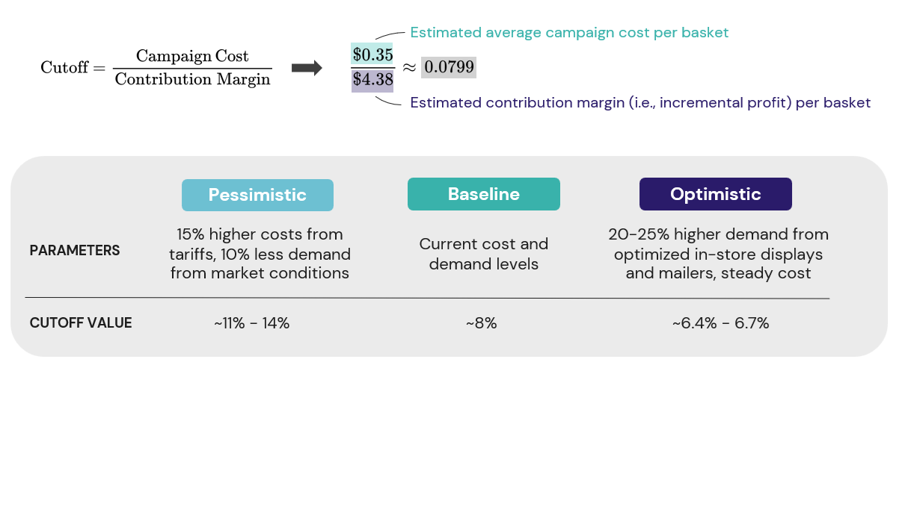
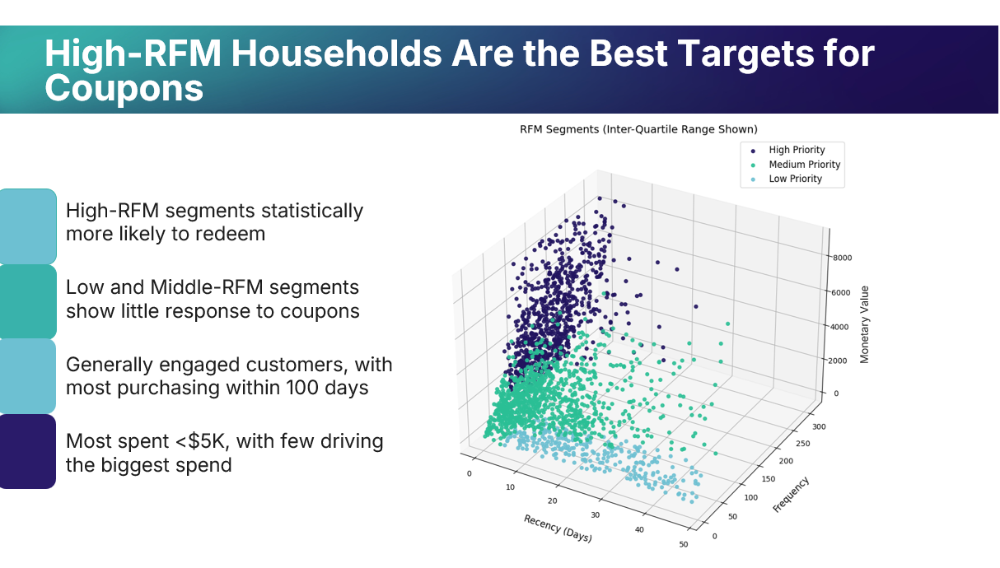
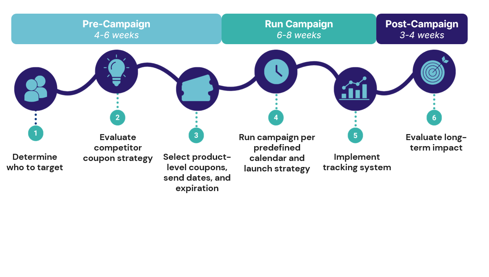
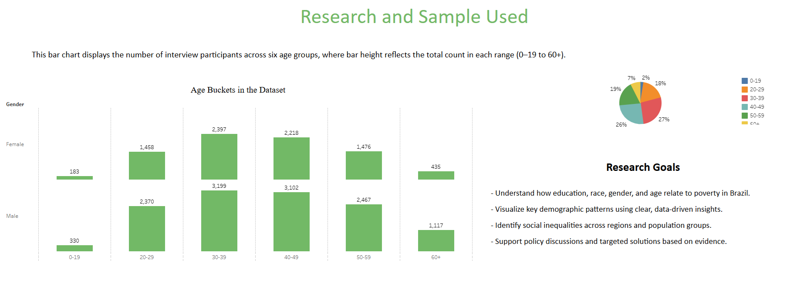
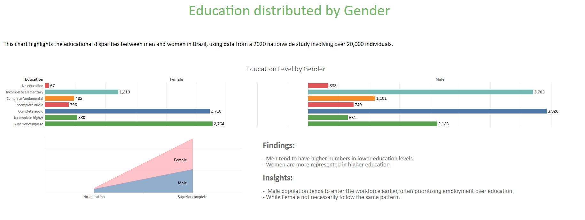
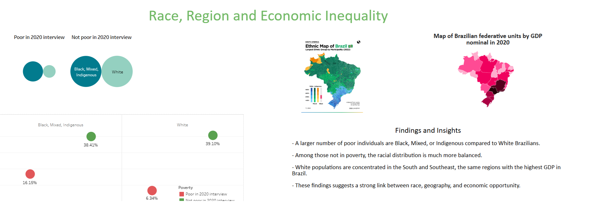
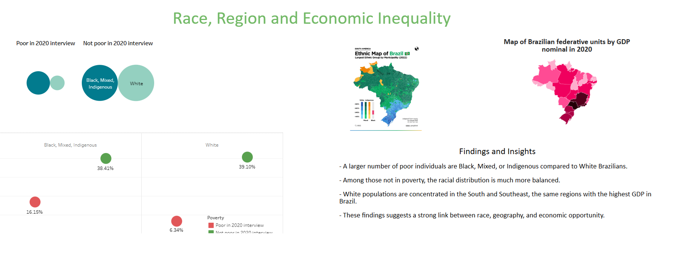

Data & Insights Lead | Senior Business Analyst
Hey there! I'm brazilian living in New York City driven by innovation and challenges.
Today, I turn raw and complex data into dashboards and visualizations that help people better undestand data. I build dashboards, codes, and impact!
Explore more about my education, work and projects below.
Project Management
SQL
Python
Power BI
Tableau
Machine Learning
AI Development
Projects
Capstone Project — Dunnhumby Campaign Analytics.
Description: For a retailer, I cleaned and joined 2M+ purchase and coupon records. Then I used Python to model segmentation, lift, and ROI to show who to target, which offers to run, and and which campaigns we can expected profit.
Technologies: SQL, Python, Power BI



Full Analysis here →
Project — Yelp Inc Database Analysis.
Description: Cleaned and modeled Yelp data with SQL, then built a Power BI dashboard to surface region/business trends fast. Shows where ratings, reviews, and check-ins are strongest.
Technologies: SQL, Power BI


Project — Subway Reviews Analysis
Description: Cleaned and modeled Subway reviews across years, then visualized results. The dashboard shows rating distribution by year and a steady drop in average rating even as review volume grew.
Technologies: Python, Pandas, Matplotlib
Project — Socioeconomic Trends in Brazil
Description: Collected public data and turned it into a clean Tableau story. Users can filter by region and year to compare poverty rates, school outcomes, and workforce metrics.
Technologies: Tableau Public


 

View full interactive dashboard →